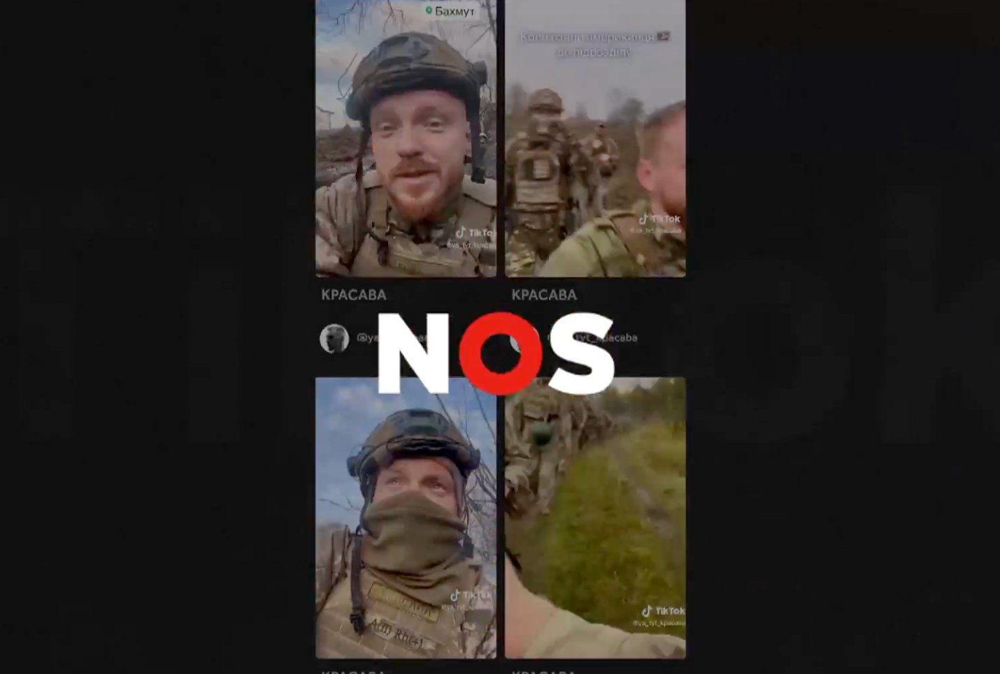
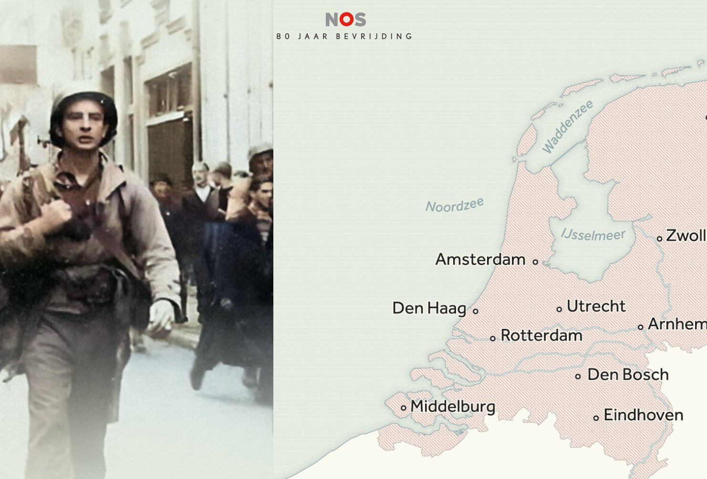

NOS · Video
1 jaar oorlog in Oekraïne
Hoe het begon, hoe het gaat en wat we kunnen verwachten. How it started, how it's going and what to expect.

NOS · Video
De slag om Bachmoet op TikTok
Hoe Oekraïense militairen via TikTok verslag doen van het front. How Ukrainian soldiers report from the frontline via TikTok.

NOS · Video
Het slavernijverleden
Hoe het Nederlandse slavernijverleden nog altijd doorwerkt in het heden. How the Dutch slavery past continues to shape the present.

NOS · Video
Hitler en de kracht van beeld
Hoe Hitler beeld inzette als propagandamiddel. How Hitler weaponised imagery as a propaganda tool.

NOS · Video
De grootste veiligheidsoperatie ooit
De grootste veiligheidsoperatie in de Nederlandse geschiedenis. The largest security operation in Dutch history.

NOS · InteractiefInteractive
De Ooggetuigen — 80 jaar bevrijding
Volg het laatste oorlogsjaar door de ogen van zeven ooggetuigen. Experience the final year of the war through the eyes of seven witnesses.

NOS · KaartenMaps
Van aanval tot oorlog
Hoe de regio in 72 uur in een golf van geweld belandde. How the region descended into a wave of violence in 72 hours.

NOS · DataData
Methaanjagers
Hoe Nederlandse onderzoekers methaanlekken vanuit de ruimte opsporen. How Dutch researchers detect methane leaks from space.

NOS · Video
De strijd tegen de schaduwvloot
Hoe Rusland met een verborgen vloot westerse sancties omzeilt. How Russia uses a hidden fleet to circumvent western sanctions.